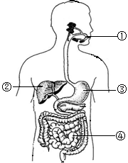
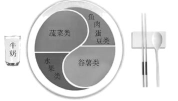

2022年北京市中考生物真题 · 选择题 第6、7、8、9、10题 · 对应解析
6. 下列营养物质不需要经过消化可以直接被人体吸收的是
A. 淀粉B. 脂肪
C. 维生素D. 蛋白质
【答案】C
【解析】
【分析】食物中含有六大类营养物质：蛋白质、糖类、脂肪、维生素、水和无机盐，每一类营养物质都是人体所必需的。其中，维生素、水和无机盐等小分子的营养物质人体可以直接吸收利用，而蛋白质、糖类、脂肪这些大分子的营养物质是不溶于水的，必须在消化道内变成小分子的能溶于水的物质后，才能被消化道壁吸收。解答即可。
【详解】食物所含的营养物质中，水、无机盐、维生素是小分子的物质能够直接被人体消化道吸收，而蛋白质、淀粉和脂肪是大分子物质需经过消化后分别被分解成氨基酸、葡萄糖、甘油和脂肪酸小分子物质才能被吸收，故选：C。
【点睛】解题的关键是明确人体能够直接吸收的营养物质是小分子的、溶于水的物质。
7. 如图是人体消化系统结构模式图。下列相关叙述错误的是

A. 脂肪可在①中初步分解
B. ②所示的消化腺可分泌胆汁
C. ③分泌的消化液含蛋白酶
D. 消化和吸收的主要场所是④
【答案】A
【解析】
【分析】本题考查消化系统的结构及功能。图中①是口腔，②是肝脏，③是胃，④是小肠。
【详解】A．①是口腔，能初步分解淀粉为麦芽糖，不能分解脂肪，A错误。
B．②是肝脏，能分泌胆汁，帮助脂肪的消化，B正确。
C．③是胃，胃内有胃腺，胃腺能分泌胃液，胃液中 胃蛋白酶能初步消化蛋白质，C正确。
胃蛋白酶能初步消化蛋白质，C正确。
D．④是小肠，小肠是消化和吸收的主要场所，D正确。
故选A。
8. 《中国居民膳食指南（2022）》通过平衡膳食餐盘（如图）宣传平衡膳食的理念。下列相关叙述错误的是

A. 肉蛋奶是人体所需能量的主要来源
B. 水果、蔬菜可提供维生素
C. 摄入食物的类别要多样
D. 摄入食物的量要适当
【答案】A
【解析】
【分析】合理营养是指全面而平衡的营养。全面是指摄取的营养素种类齐全。平衡是指摄取的各种营养素的量合适，与身体的需要保持平衡。食物主要含有糖类、脂肪、蛋白质、水、无机盐、维生素六类营养物质。
【详解】A．人体生命活动所需要的能量，主要是由糖类提供的。葡萄糖、蔗糖、淀粉等都属于糖类。奶、蛋、鱼、肉类食物含有丰富的蛋白质。蛋白质是构成人体细胞的重要物质，人的生长发育以及受损细胞的修复和更新，都离不开蛋白质，A错误。
B．维生素是一类比较简单的有机物，种类很多。它们不是构成人体细胞的主要物质，也不为人体生命活动提供能量，B正确。
C．合理营养是指全面而平衡的营养。全面是指摄取的营养素种类齐全，C正确。
D．摄取的各种营养素的量合适，与身体的需要保持平衡，D正确。
故选A。
9. 血细胞包括红细胞、白细胞和血小板，其中血小板功能是
A. 吞噬病菌B. 运输氧气C. 促进止血D. 运输代谢废物
【答案】C
【解析】
【分析】血细胞包括红细胞、白细胞和血小板。①红细胞（RBC）：是数量最多的血细胞，成熟的红细胞没有细胞核，富含血红蛋白（Hb），具有运输氧气的功能，也运输一部分二氧化碳。②白细胞（WBC）：是数量最少的血细胞，有细胞核，但比红细胞大，能吞噬病菌，有防御保护功能。③血小板（PLT）：是体积最小的血细胞，无细胞核，形状不规则，有止血和凝血的作用。
【详解】A．白细胞能吞噬病菌，有防御保护功能，A错误。
B．红细胞具有运输氧气的功能，也运输一部分二氧化碳，B错误。
C．血小板有止血和凝血的作用，C正确。
D．血浆功能是运载血细胞，运输养料和废物，D错误。
故选C。
10. 毛细血管是连通最小动脉与静脉的血管。与毛细血管物质交换功能相适应的特点不包括
A. 数量多，分布广B. 管壁薄，由一层上皮细胞构成
C. 管内血流速度快D. 管径小，只允许红细胞单行通过
【答案】C
【解析】
【分析】毛细血管在体内数量很多，分布很广；其管壁最薄，只有一层扁平上皮细胞构成；管的内径十分小，只允许红细胞单行通过；管内血流速度最慢；连通于最小的动脉和静脉。这些特点便于血液与组织细胞充分地进行物质交换。
【详解】A．毛细血管在体内数量多、分布广，便于身体各部分组织进行物质交换，A不符合题意。
B．毛细血管管壁薄，由一层上皮细胞构成，交换的物质更容易穿过血管壁，B不符合题意。
C．毛细血管内血流速度最慢，C符合题意。
D．毛细血管管径小，只允许红细胞单行通过，血流速度慢，利于充分进行物质交换，D不符合题意。
故选C。